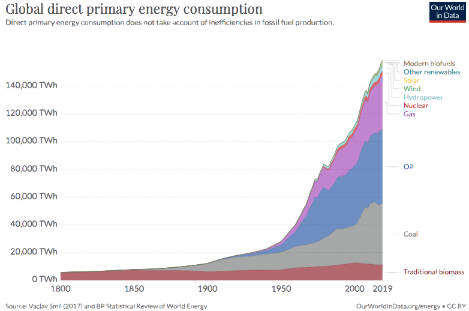

Things to which I've been giving some thought... Inspired by Patrick Collison, Gwern, and Alex Guzey.
≑ Does stretching improve running performance?
≑ What elements create nationalistic moods in music?
Why do Rachmaninoff, Scriabin, and Tchaikovsky sound Russian? Why do Satie, Ravel, and Debussy sound French? Whys does Wagner sound German?
≑ What are the most effective measures and biggest myths around personal cabon footprint management?
Veganism, recycling, and other widespread "truisms" are not particularly convincing.
≑ What is the state of nuclear energy technology (both fission and fusion)? Why does it seem underfunded?
I suspect that solutions to sustainable primary energy generation will follow power laws (see below). While the prospect for solar is exciting, nuclear provides orders of magnitude higher energy density and its centralized generation may facilitate scaling. Hydrogen could also be a strong contender.

≑ Given a 6-month timeframe, what is the most effective strategy to learn programming?
NB: with the aim of developing (i) ability to build v1 of a commercializable product and (ii) skills to manage large-scale software projects.
≑ How is mission-critical productivity software (e.g. Veeva, Guidewire, Procore) adopted by enterprises?
≑ Are there any significant structural barriers (besides demand) to building a global company outside of the US?
Or is the difference in success cases mostly driven by culture and sheer number of companies being founded? Talkdesk and Outsystems have both built $1B+ software businesses out of Portugal with local talent (although they also operated in the US). Do infrastructure projects face stronger barriers? This obviously varies on a country-by-country and business-by-business basis, but I often end up coming back to a variations on the same theme.